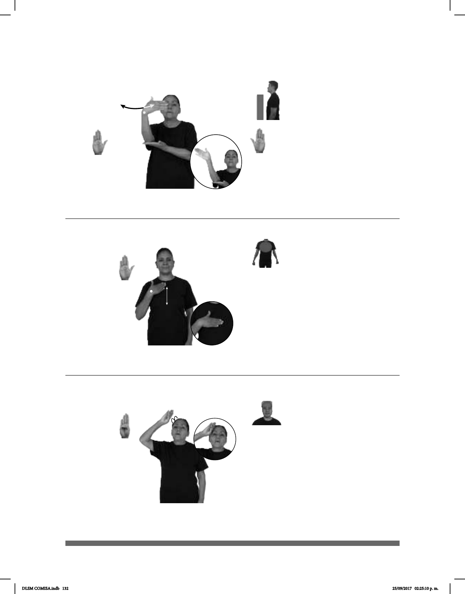

132
(B-P 64)
BANDERA CAER MIENTRAS CEREMONIA
La bandera se cayó durante la ceremonia.
Seña: SB
MD y MB B-P.2
MD palma hacia la izquierda.
MB palma hacia arriba.
MD a la altura del rostro con el
codo apoyado sobre MB. MB a la altura del
pecho.
La MD se mueve formando un
arco de izquierda a derecha repetidamente.
Simula una bandera en
movimiento.
sust. f. Tela de forma
comúnmente rectangular, que se asegura por
uno de sus lados a un asta o a una driza y se
emplea como enseña o señal de una nación,
una ciudad o una institución.
(B-P 65)
Seña: SM
B-P.2
Palma hacia adentro.
Sobre el pecho y se
desliza hacia el abdomen.
Recto repetidamente.
sust. m. cuarto con
lavabo, ducha, bañera, inodoro y
otros servicios sanitarios.
pro-YO IR BAÑO
Voy al baño.
Seña: SM
B-P.1
Palma hacia afuera.
Sobre la cabeza del lado
derecho.
La mano simula varios
saltos.
Cabeceo
ligero de izquierda a derecha; labios
abiertos.
1. sust. f. Acción o acto
exagerado. 2. adj. Que no tiene
medida o límite; que es
desproporcionado o excesivo.
(B-P 66)
1
2
_________¡ !_
pro-ÉL MUCHO DINERO QUÉ-BÁRBARIDAD
Él tiene mucho dinero, ¡qué bárbaridad!
DLSM COMISA.indb 132 25/09/2017 02:25:10 p. m.